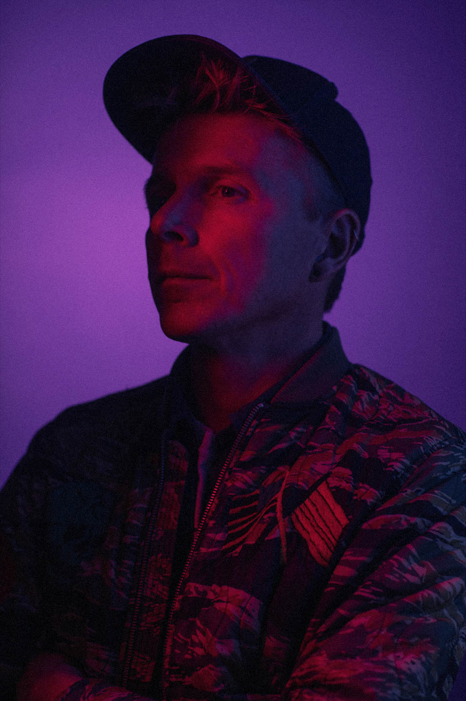
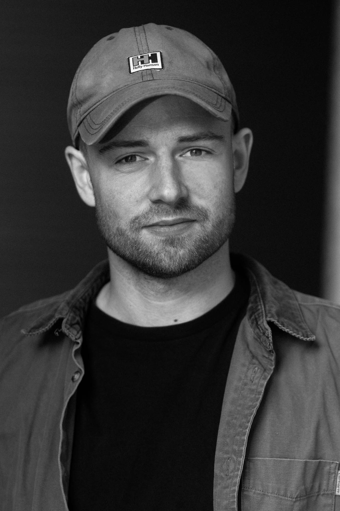

Büro Jantzen er en flok fotografer, der er drevet af deres passion for billeder og film. Vi elsker det vi laver.
Stiftet af Ulrik Jantzen, der er uddannet fra Danmarks Journalisthøjskole, og som igennem de sidste 15 år har gjort sig bemærket på Danmarks fotografiske scene.
Vi mener, at der skal nærvær, energi og personlighed i de billeder, vi laver. Vi lytter og respekterer kundens ønsker, prioriterer altid et tillidsfuldt samarbejde og leverer altid høj kvalitet.

Ulrik Jantzzen
+45 20 71 61 41
ulrik@burojantzen.com
Ulrik er en aegte far til fire men udover det elsker han ogsa gamle biler, skispon ort og wakeboarding i Cable Park.Hans passion for god kaffe kan neeste male sig med hansenergi og keerlighed til fotografiet. Ulrik opdagede forstden magi pa Danmarks Journalist Hojskole, siden henBerlingske, et utal af ind- og udenlandske medier,magasiner og sode kunder.

Kasper Hjorth
+45 93 89 23 93
kasper@burojantzen.com
Kasper har gennem mange ar arbejdet som selvsteendig freelancer med international erfaring fra bl.a New York og Canada. Kasper har desuden steerke kompetencer indenfor videografi og beveegende billeder.
Mads Joakim
+45 40 52 90 07
mads@burojantzen.com
Mads er uddannet fotojournalist fra Danmarks Medie- og Journalisthojskole, og har studeret Multimedia Journalism pa Lebanese American University (LBN). Han har vundet flere priser ved blandt andet Arets Pressefoto og College Photographer of the Year.
Mads Joakim
+45 40 52 90 07
mads@burojantzen.com
Mads er uddannet fotojournalist fra Danmarks Medie- og Journalisthojskole, og har studeret Multimedia Journalism pa Lebanese American University (LBN). Han har vundet flere priser ved blandt andet Arets Pressefoto og College Photographer of the Year.
Kasper Witte Larsen
+45 61 28 39 33
witte@burojar antzen.com
Kasper er uddannet fra Kabenhavns Tekniske Fotograf uddannelse og har arbejdet i Buro'et i fire ar. Han elsker person-fotografiet, men skyder faktisk det meste - bade digitalt og analog mellemformat. Derudover er han far til Alberte og hunden Marley.
Tobias Helms
+4545 29 87 16 06
tobias@burojantzen.com
Tobias har i mange ar spillet trommer og igennem musikverdenen fik han chancen for at prove sig af som bade foto- og videograf. Det gjorde ham nysgerrig pa atudforske fotografiet og levende billeder. En nysgerrighed han har arbejdet med pa Kobenhavns Tekniske Fotograf uddannelse.
Ulrik Jantzzen
+45 20 71 61 41
ulrik@burojantzen.com
Ulrik er en aegte far til fire men udover det elsker han ogsa gamle biler, skispon ort og wakeboarding i Cable Park.Hans passion for god kaffe kan neeste male sig med hansenergi og keerlighed til fotografiet. Ulrik opdagede forstden magi pa Danmarks Journalist Hojskole, siden henBerlingske, et utal af ind- og udenlandske medier,magasiner og sode kunder.
Ulrik Jantzzen
+45 20 71 61 41
ulrik@burojantzen.com
Ulrik er en aegte far til fire men udover det elsker han ogsa gamle biler, skispon ort og wakeboarding i Cable Park.Hans passion for god kaffe kan neeste male sig med hansenergi og keerlighed til fotografiet. Ulrik opdagede forstden magi pa Danmarks Journalist Hojskole, siden henBerlingske, et utal af ind- og udenlandske medier,magasiner og sode kunder.